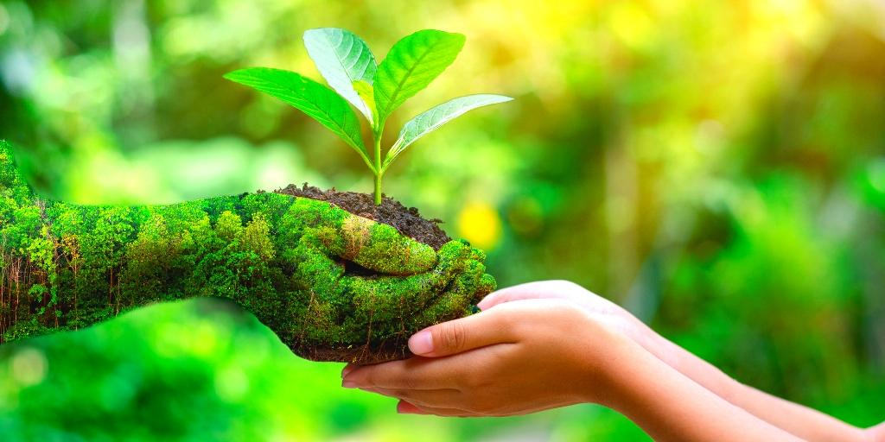
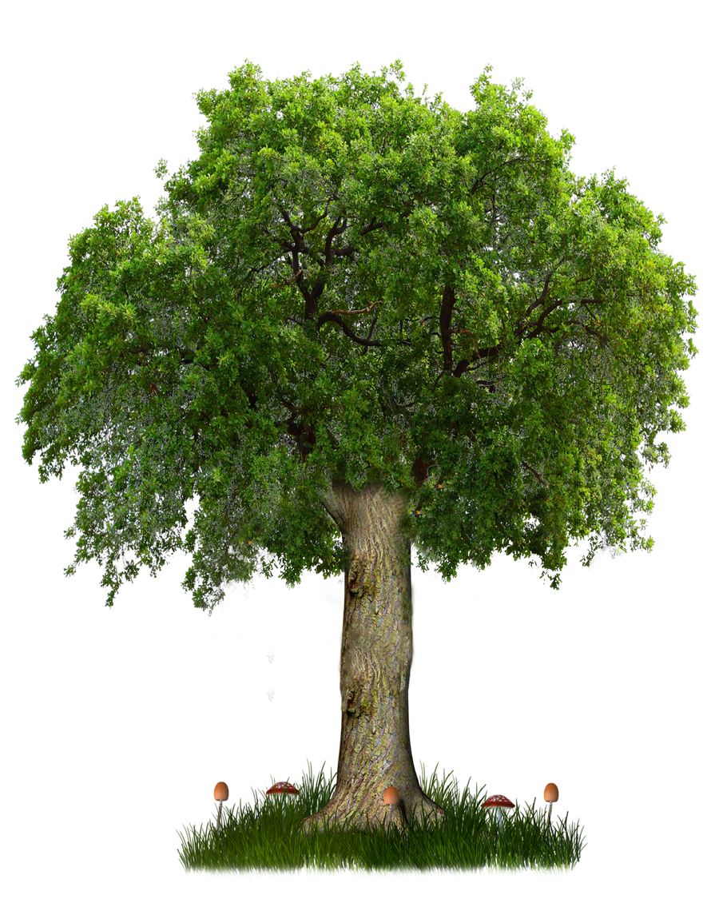

Todos nós sabemos que o planeta terra é o nosso lar, por isso devemos mantê-lo limpo e preservado para nossas vidas e as futuras gerações! E isso é totalmente possível, basta adotarmos em nossas vidas os comportamentos e medidas ideais para o mundo ser um lugar melhor, por que até o fato de uma pessoa estar consciente de não jogar um papel de bala no chão e assim fazer já é uma prática que torna o mundo um lugar melhor! Seria simplesmente maravilhoso se cada pessoa no planeta terra adotasse as práticas essenciais para a preservação de toda a natureza e meio ambiente, poderíamos pensar no imensurável bem que seria feito para o mundo com essa consciência!
Mas, nós sabemos que não é bem assim...Bom, sabemos que o ser humano, conforme foi evoluindo com o passar do tempo, teve a necessidade de criar tercnologias para a solução de problemas ou até a criação de coisas novas. Certamente a tecnologia, como as máquinas, deram a nós a facilidade de resouver problemas que antes eram impossíveis aos nossos olhos, e isso tudo é muito bom, mas o porém dessa questão é que muitas dessas criações fazem mal a natureza, por que ou são usadas para o mal ou tiram muitos recursos e elementos dela que no final nem precisaria e nem seria necessário! Com isso, muitos problemas graves surgiram no mundo e na natureza, alguns principais como:
- Poluição:Causada pelo excesso de lixo e gases poluentes vindos das indústias.
- Efeito Estufa:Causado pelos gases que as indústrias e empresas soltam no ar.
- Extinção de Animais:Por causa da expansão territorial para a implementação de cidades alguns animais não conseguiram abitar mais no seu espaço natural.
- Desmatamento:Causado pela espansão territorial e coleta de madeira para a construção de moradias.
Mas ainda existe esperança, ainda dá tempo de reverter essa situação ruim nos dias de hoje. Se nós nos conscientizarmos e adotarmos as medidas e práticas certas para a preservação do nosso planeta, nós poderemos tornar o mundo um lugar melhor.
